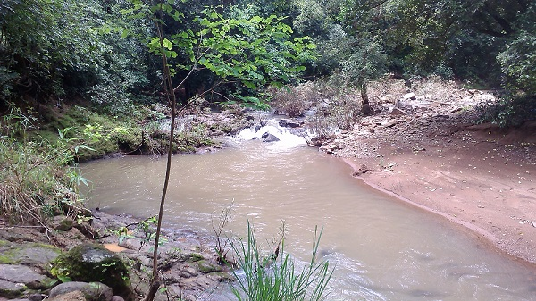
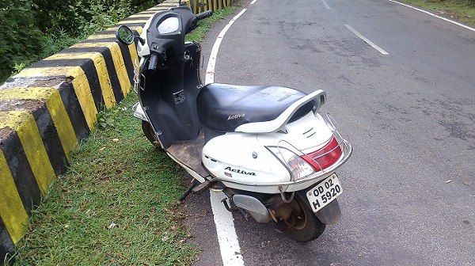

Hello friends, welcome to my blog . This is a place where you can get to know me, like what I am doing, my experience from day-to-day life etc. Hope you like it. Happy Blogging
It was 7am when I got a call from my amigo Siddarth. He said that it's vacation time and it was very tough for him to just sit at home doing nothing. I suggested him to watch some TV shows on National Geographic channel, since he is an expert photographer and very enthusiastic about clicking pictures of animals whether wild or domestic. He remained silent for some time and suddenly told me why not go out & do some real life photography, like waterfalls, jungle etc. When I asked him that how are we going there, if we have to hire a taxi or something, which was not possible instantly, he said "SCOOTY" . Since I am very fond of adventure I said "LET'S ROLL".
We decided to go to the waterfall and jungles of Phulbani, a place which is a perfect example of nature at it's best. It's got waterfalls, jungles full of animals which can even tear you apart, haunted bungalows etc.
We met at Khandagiri Chowk, on NH-5 at 8am. We thougth that we had to cover round about 200kms in 4 hrs so with fuel tanks full we rolled out. In a matter of just 1hr and 45mins, we reached Nayagarh. Though there is nothing exciting between BBSR and Nayagarh, but still the journey seemed very interesting. We had our breakfast and then we rolled out again.
In about 2hrs we reached the outskirts of Phulbani. The place was very good, complete opposite of BBSR. Cool breeeze, birds chirrping, everything seemed so nice there. We halted near a river to freshen up.
As soon as we reached near the river, the photographers inside us told us to start the "real life photography" for which we had travelled for about 200kms. We took out our cameras and started taking some shots. Some were cool, some were professional and some were very aweful.

I was new to photogaphy so I was very exited going into the jungle and I followed Siddarth. We had breached about 200mtrs into the jungle but could not see any animals. There were some beutiful birds, Siddarth took out his cam and started clicking some pics. When I was standing there, just behind him, suddenly I felt something whizzed past me just like you are standing beside the road and a ferrari rolls past very close to you. When I turned my head I was not able to see anything, but still I was sure that I had felt something. We ventured deep into the jungle, after walking for more than 30mins we saw something that moved us, a leopard and it's entire family. After seeing the leopard I become sure of 2 things. First was that the thing that whizzed past me might have been the leapard and second was that Nandankanan Officials are liars that all the anmials of Odisha have been preserved there. The sight was very beutiful, but we knew that if we breach into leopard's area then this sight might get ugly. So we maintained a distance and started clicking some shots. As the leopard started growling at us, we decided to wrap up with just 3-4 shots and leave them in peace. We quickly ran away from there only to find a thougth in my mind that if leopards can be there then there can be a whole bunch of other species there. Upon hearing my thougth Siddarth said "This much adventure is enough for the day, let's head towards the town".
After spending time there we headed towards the town of Phulbani. We travelled for about 20mins when the ghats started. Locallites there warned us from going into the ghats on a 2-wheeler. They said that many accidents have occured in the past. People on 2-wheelers loose their balance especially on the turning points because of which they fall down the ghats and eventually loose their precious lives. After listening to all this we stared at each other. Anybody could have seen the fear in our eyes. But still we mustered some courage to roll up the ghats. On ascending the ghats slowly and steadily we gained courage. The total length of the ghats is about 6kms. When we came up half way we felt relaxed and we took out our cams to capture few of those memorable moments.

We safely crossed the ghats to reach Phulbani at 2:30 pm. Since my maternal grandfather used to stay there we thougth of taking some rest in his house. We had our lunch and went to sleep. We woke up at 5 in the evening only to see that we woke up very late. Since it was not safe to travel on a 2-wheeler at night, so we decided to stay back and roll out the next day. To pass the time we decided to engage ourselves in some adventure so we ventured into the haunted bungalows of phulbani. I will blog about my experience of the haunted bungalows in my future blogs.
Imagining to be a photographer is easy but actually being one is very tough.
What I learned throughout the day is that being a photographer is very tough. It looks like just a click, but that click requires great experience. As a photographer you are always required to play with lights, you are always required to capture with a point of view which is different from others. But to become a photographer is also not that tough. Click pictures of just one thing like your pet (mine was my dog). Click about 100 pictures in 6 days of the week and the 7th day compare all of them and try to find the best. Take reviews of the best one from your friends and family members, and do it again and again. In a matter of months you can also become a good photographer.
Hope you liked my blog, meet you in my next blog. Thank you!!